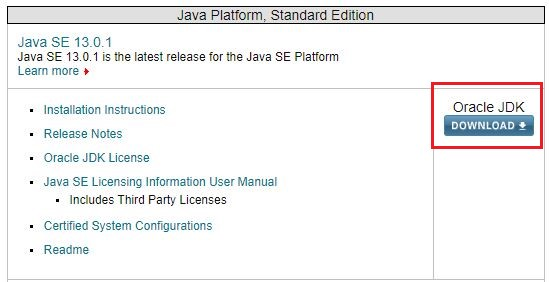
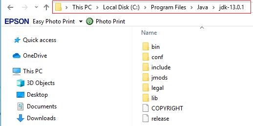
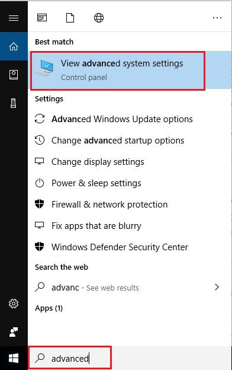
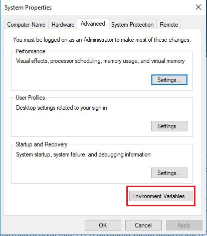
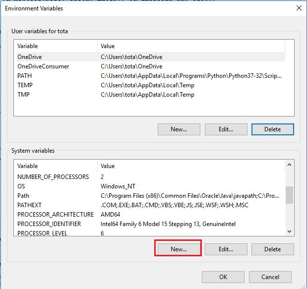
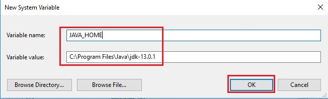
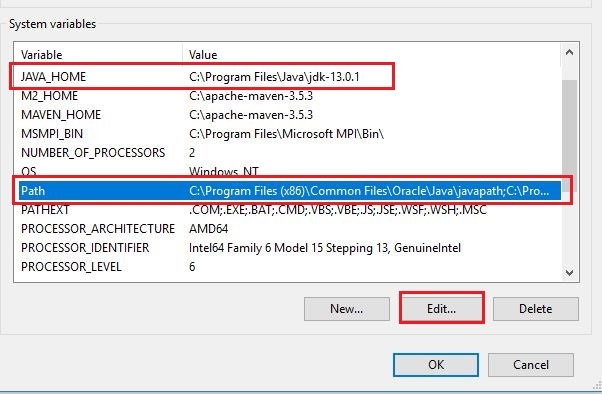
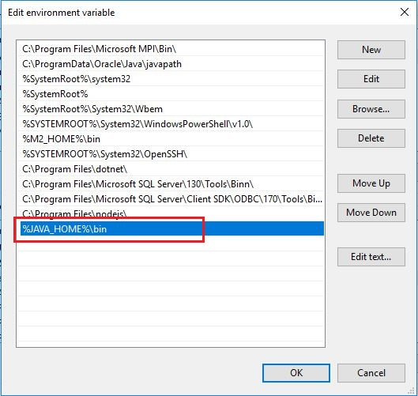
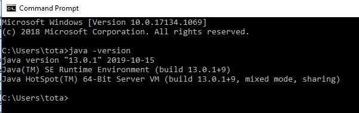

Σε αυτό το δωρεάν μάθημα Java, θα μάθουμε πως να εγκαταστήσουμε
τα απαραίτητα εργαλεία που θα μας βοηθήσουν να γράψουμε, να κάνουμε
διορθώσεις και να εκτελέσουμε εφαρμογές γραμμένες σε γλώσσα προγραμματισμού Java.
Η open source κοινότητα έχει δημιουργήσει αρκετά εργαλεία ανάπτυξης Java
κώδικα, τα οποία είναι αξιόπιστα ως προς σταθερότητα τους σαν προγράμματα
και δωρεάν να τα χρησιμοποιήσουμε ακόμα και για επαγγελματικές εφαρμογές.
Σε αυτή την ενότητα θα δούμε βήμα προς βήμα πως εγκαθιστούμε όλα τα
εργαλεία που χρειάζονται για την σωστή ανάπτυξη και εκτέλεση Java εφαρμογών.
Τα βασικά ερωτήματα είναι δύο: (1) τι εργαλεία χρειαζόμαστε
και (2) ποια είναι η σωστή σειρά εγκατάστασή τους.
Για την ανάπτυξη προγραμμάτων σε γλώσσα προγραμματισμού Java,
θα χρειαστεί να έχουμε τα εξής εργαλεία διαθέσιμα και
εγκαταστημένα στον υπολογιστή μας με την ακόλουθη σειρά:
- Το Java Development Kit (JDK) από την Oracle
- Ένα Integrated Development Enviroment (IDE) για την δημιουργία και
εκτέλεση Java κώδικα.
Για να μπορέσουμε να βρούμε την πιο τελευταία έκδοση της Java, θα πρέπει να πάμε στο site
της Oracle
(https://www.oracle.com/technetwork/java/javase/downloads/index.html).
Στην αρχή, η λίστα με όλες τις διαφορετικές εκδόσεις που εμφανίζονται μπορεί να σας μπερδέψει.
Οπότε ας εξηγήσουμε λίγο τις επιλογές που υπάρχουν στο site και ποια έκδοση
θα αποφασίσουμε τελικά να χρησιμοποιήσουμε. Η πιο τελευταία έκδοση βρίσκεται στην
αρχή της λίστας. Το κουμπί δεξιά από την έκδοση της Java μας δίνει μια και μόνο
επιλογή κατεβάσματος που είναι το Oracle JDK.

Αυτό είναι το περιβάλλον που χρειαζόμαστε για να γράψουμε και
ταυτόχρονα να τρέξουμε ένα πρόγραμμα γραμμένο σε κώδικα Java.
Αν κατεβούμε πιο κάτω στην λίστα, θα δούμε παλαιότερες εκδόσεις,
που εκτός από την JDK επιλογή, μας προσφέρουν και την JRE επιλογή.
Μετά την έκδοση Java 10, η JRE επιλογή δεν υπάρχει πια, όπως δεν
υπάρχει πια και η επιλογή για 32 ή 64 bit εγκατάσταση. Η JRE έκδοση της
Java μας δίνει την δυνατότητα να τρέξουμε κάποια εφαρμογή γραμμένη
σε Java αλλά δεν έχουμε compile και editing δυνατότητες. Αυτό
σημαίνει ότι απλά χρησιμοποιούσαμε την JRE έκδοση της Java για
να τρέχουμε τις εφαρμογές μας αφού ήδη είχαν γραφτεί με την χρήση
του JDK. Αυτή η λογική αποσύρθηκε από την Oracle και ανεξάρτητα σε
ποια έκδοση της Java εργάζεστε θα κατεβάζετε το JDK μόνο. Επίσης,
όλες οι καινούργιες εκδόσεις της Java απαιτούν να τρέξουν μόνο σε
64 bit περιβάλλον. Τέλος, αν θέλετε να αναπτύξετε κάποιο πρόγραμμα
που αργότερα θα πουλήσετε και δεν θέλετε να πληρώσετε license fees
για την χρήση της Java σε παραγωγικό περιβάλλον μπορείτε να κατεβάσετε
την open source έκδοση
(jdk.java.net) η οποία συντηρείται και αυτή από την Oracle
αλλά δεν παρέχει κανένα support αλλά ούτε και security updates.
Οπότε για να ανακεφαλαιώσουμε, για την δημιουργία Java
Standard Edition εφαρμογών, μπορείτε να κατεβάσετε
την πιο τελευταία έκδοση Java (JDK) από την Oracle και
να την εγκαταστήσετε. Η εγκατάσταση είναι πολύ απλή και
αυτό που μόνο έχετε να κάνετε είναι να πατήσετε Next στα
παράθυρα που εμφανίζονται. Τα δικά μας παραδείγματα θα
γραφτούν σε περιβάλλον Windows 10, με Java 13. Εδώ θα
ήθελα να επισημάνω το γεγονός ότι αν και η έκδοση της
Java έχει φτάσει στην έκδοση 13 (μέχρι την στιγμή που
γράφεται αυτό το άρθρο), πολλές εταιρείες έχουν μείνει
και συνεχίζουν να γράφουν σε Java 8. Η βασική θεωρία σε
ένα μεγάλο ποσοστό είναι η ίδια. Θα αναφέρουμε όμως τις
διαφορές που υπάρχουν ανάμεσα στην Java 8 και στις υπόλοιπες
εκδόσεις μετά από αυτήν καθώς αναλύουμε την θεωρία στις
ενότητες που θα ακολουθήσουν.

Όταν ολοκληρωθεί η εγκατάσταση, θα έχει δημιουργηθεί
ένας καινούργιος φάκελος Java, στο Program Files, ο
οποίος περιέχει το jdk-13. Στον ίδιο φάκελο Java θα
έρθετε να βρείτε όλες τις διάφορες εκδόσεις Java
που έχετε εγκαταστήσει στον υπολογιστή σας. Για
παράδειγμα, θα θέλατε να έχετε την πιο τελευταία
έκδοση Java εγκαταστημένη στον υπολογιστή σας για
να πειραματιστείτε με τα καινούργια χαρακτηριστικά
της Java, αλλά ταυτόχρονα για την καθημερινή σας
εργασία να γράφετε εφαρμογές σε Java 8.

Αφήστε ανοιχτό το παράθυρο του File Explorer που ανοίξατε στο
προηγούμενο βήμα, γιατί θα χρειαστεί να αντιγράψουμε το
path της εγκατάστασης της Java για το επόμενο βήμα.
Πρέπει λοιπόν τώρα να δηλώσουμε στα Windows 10 το που
έχει εγκατασταθεί η Java, έτσι ώστε άλλα προγράμματα,
όπως application servers, να μπορούν να την βρουν για
να λειτουργήσουν σωστά. Επίσης, θα μπορούμε και εμείς,
να ανοίγουμε ένα CMD terminal στα Windows και να εκτελούμε
εντολές Java ανεξάρτητα σε ποιο φάκελο μέσα είμαστε.
Γράφουμε λοιπόν Advanced στο search πεδίο των Windows 10 και από
τις εμφανιζόμενες επιλογές πατάμε στο View advanced system settings.

Στο παράθυρο που εμφανίζεται, κάνουμε κλικ στο Environment
Variables για να μεταφερθούμε σε ένα καινούργιο παράθυρο
όπου θα μπορέσουμε να προσθέσουμε μια καινούργια Environment Variable.

Πατάμε New στο system variables, και γράφουμε JAVA_HOME για Variable Name και το
path όπως το είχατε βρει στο File Explorer (C:\Program Files\Java\jdk-13).
Μετά πατάτε ΟΚ.


Τώρα πρέπει να δηλώσουμε το JAVA_HOME στο path System variable.
Επιλέγουμε λοιπόν Path από τα System variables και πατάμε το κουμπί Edit.

Πατάμε New, γράφουμε %JAVA_HOME%\bin και πατάμε
ENTER για να ολοκληρώσουμε την καταχώρηση.
Αυτό είναι το path μέσα στο οποίο βρίσκονται
τα εκτελέσιμα αρχεία της Java. Στο τέλος της διαδικασίας
θα πρέπει να έχετε το ίδιο αποτέλεσμα όπως αυτό της πιο κάτω εικόνας.

Ας δοκιμάσουμε λοιπόν αν η όλη διαδικασία είχε επιτυχία.
Ανοίγουμε ένα CMD παράθυρο και γράφουμε την εντολή Java -version.
Θα πρέπει να σας εμφανιστεί η έκδοση της Java που έχετε εγκαταστήσει.

Στην επόμενη ενότητα θα εγκαταστήσουμε το NetBeans και
θα δημιουργήσουμε το πρώτο μας “Hello World” πρόγραμμα στην Java.